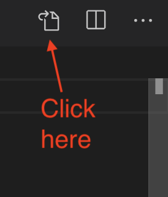
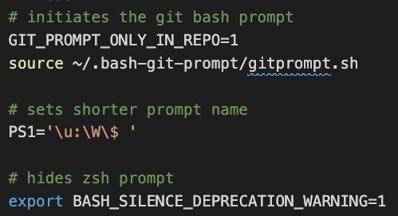
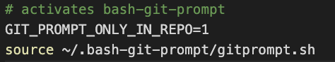

3 Setup: Part 1
Now that you have a little familiarity with you Terminal on your computer, we’re going to use it to install a bunch of stuff on you computer. During this setup you will be doing a bunch of steps on blind faith without much explanation, mostly downloading software and configuring it. I don’t go into a lot of details because these steps are typically only done once.
You’ll be using your Terminal (or GitBash on Windows), which is a program that allows you to talk to your computer using text. It might seem scary at first but you’ll soon get used to it as you’ll be using your Terminal throughout this class (mostly from within Visual Studio Code).
Be sure to read all the directions for a particular section before diving in as there are hints that you’ll need as you install and configure.
There are some cases here where macOS and Windows differs greatly. I’ll try to make those differences clear.
3.1 Install Git
Note there are some platform differences here …
Homebrew is a “package manager”, meaning it is a program to help you install other programs that are not in Apple’s app store … usually geeky things. We’ll use Homebrew to install Git, which you will learn more about soon.
- Install Homebrew. Just go to that page and copy that first command noted and then run it in your terminal and then come back here. IT WILL TAKE SOME TIME. Once it is done …
- Install Git using this homebrew command:
brew install git.
Don’t install any Git GUI clients. Git just lives inside your computer and we’ll use the Terminal to control it instead of a traditional “app”.
If you did the “Terminal” chapters in this book then you’ve already installed Git and you can move onto the next section to configure it.
If you haven’t for some reason, download it from Git Downloads and install it. When asked to “Adjust your PATH environment” choose “Use Git from Git Bash only”.
3.2 Configure git
Here we’ll update some settings within git on your machine.
First we’ll set your user.name so Git knows who you are.
- In your Terminal, do this but use your name in quotes instead of “Mona Lisa”:
git config --global user.name "Mona Lisa"Now we’ll set your user.email.
- In your Terminal do this but use your email:
git config --global user.email "email@example.com"You will want to use the same email when you create your GitHub account.
Lastly we’ll set git to name your default branch “main” instead of “master” as this is a new standard.
- In your terminal, run this:
git config --global init.defaultBranch mainYou won’t get a reponse unless there was a problem.
3.3 Set up GitHub
If you don’t already have a GitHub account, go to github.com and create an account.
Choose your Github username carefully and don’t make the name specific to this class. This is your personal GitHub profile FOREVER. I would also avoid upper case characters as a matter of convention. Your name becomes part of a URL for your projects when we publish them.
3.4 Saving your GitHub credentials
If you have ever set up SSH keys before, find the instructor. (If you don’t understand that sentence, you likely haven’t.)
We’re going to create a special file on your computer so that your machine can connect to your GitHub account. (GitHub doesn’t like sending your password around). It will seem complicated, but it’s not really.
These directions from from here (macOS | Windows) but try the steps for your computer listed below as they are streamlined.
- During this process, you’ll be asked to save the location of the rsa_id. Just hit return to save the default location.
- You’ll also be asked to set a password for the file. JUST LEAVE THE PASSWORD BLANK and hit return. It will ask you a couple of times.
- At the end of the installation, it will give a path to the rsa_id file. We might need to open this file in the next step to copy it. Ask for help at this step.
- In your terminal, run the following command but with your email:
ssh-keygen -t ed25519 -C "your_email@example.com"- When it prompts you about a location, JUST HIT RETURN to accept the default.
- when it prompts you for a passphrase, JUST HIT RETURN to leave it blank.
You should get a nice little art looking return on your terminal, eventually.
What those steps did is create a file on your computer and put inside of it a bunch of random characters.
To “copy” the contents of this file, the command differs between macOS and Windows:
- Once you are through the steps above, do the following command:
pbcopy < ~/.ssh/id_ed25519.pub- Once you are through the steps above, do the following command:
clip < ~/.ssh/id_ed25519.pubThis copies the contents of that file you created to your clipboard. It’s like opening the file and copying the contents.
3.5 Saving SSH key in Github
Now we’ll save the contents of that secret file on your computer into your Github account so Github “knows” about your computer.
- Go to github.com and click your user icon and choose Settings.
- In the user settings sidebar on the left, click SSH and GPG keys.
- Click New SSH key or Add SSH key.
- In the “Title” field, add a descriptive label for the new key. Name it after your computer, like “Personal MacBook Air” or something.
- In the “Key” field, so Command-V to paste your key into the box.
It will look something like this (but the contents will be different):

Almost done!
- Click Add SSH key.
- If prompted, confirm your GitHub password.
3.5.1 Test Github connection
- From your Terminal, do the following command:
ssh -T git@github.com- If you are asked about “RSA key fingerprint”, type yes and hit return.
- In the end, you should have a success message like: “Hi username! You’ve successfully authenticated, but GitHub does not provide shell access.” If you get that message, you are good!
3.5.2 Alternative to SSH keys
If you can’t set SSH keys, you can at least reduce the number of times you have to enter your GitHub name/password by caching your password. We’ll have to use this method for lab computers.
3.6 Text editor
We will use the code editor Visual Studio Code, made by Microsoft. It is free. We need to install it now.
- Install the code editor Visual Studio Code on your machine.
- After you’ve installed it, launch Visual Studio Code.
- Open the Command Palette (View > Command Palette) and type in
>shell commandand look for the return Shell Command: Install ‘code’ command in PATH. Choose that.

It allows us to open files in VS Code directly from a Terminal.
Windows users have one more thing to do: We need to configure your VS Code integrated terminal to use Git Bash.
- Go to View > Command Palette and type in
>Terminal: Select Default Shelland choose it. - When it prompts you with choices, choose git bash.
3.6.1 Test the path
- Close your Terminal and restart it.
- Type
code ./and see it opens VS Code.
Hollar if it doesn’t. We need that to work before the next step.
3.7 Installing bash-git-prompt
This next tool gives us some feedback in our Terminal when we are using git.
- Open a new Git Bash window to install the
git-bash-promptwith the following command:
git clone https://github.com/magicmonty/bash-git-prompt.git .bash-git-prompt --depth=1This should install the software you need to your home directory.
- Now we’ll open (or create) a settings file for bash:
code ~/.bash_profileIf the above command doesn’t open the file in VS Code then you didn’t set the code command in the “Code Editor” section. First quit/relaunch Terminal and try again. If that doesn’t work, go back to “Launching from the command line” and do that again.)
- Once your
.bash_profileopens in VS Code, copy and paste this into the bottom of the file based on your operating system. (If there is any content in the file already, leave that there.)
# initiates the git bash prompt
GIT_PROMPT_ONLY_IN_REPO=1
source ~/.bash-git-prompt/gitprompt.sh
# sets shorter prompt name
PS1='\u:\W\$ '
# hides zsh prompt
export BASH_SILENCE_DEPRECATION_WARNING=1In addition to adding some commands to help you with git, we also added something to shorten your terminal prompt. We also added a command to stop asking you to change to zsh.
# initiates the git bash prompt
GIT_PROMPT_ONLY_IN_REPO=1
source ~/.bash-git-prompt/gitprompt.shThis tells your terminal to use the gitprompt software we installed above.
- Close and restart your Terminal program to load the new settings.
3.8 VS Code extensions
If you look on the left-menu of Visual Studio code, there is a square puzzle looking icon that gives you a list of extensions that you can search for an enable. See the VS Code docs for more info.
- In VS Code, click on the Extensions icon.
- In the search box, type in Live Server and find the one created by Ritwick Dey.
- Click the Install button on that page.
- Do the same for markdownlint by David Anson.
- Do the same for Nunjucks by ronnidc.
These all make Visual Studio Code more awesomer in different ways.
3.9 VS Code preferences
I have some helpful user preferences for VS Code that you might find useful.
- Go to the Code > Preferences > Settings.
- At the top right of the code editor are a series of icons, including this one:

- In the new file that opens, copy and paste the code below and replace what is there.
{
"editor.fontSize": 14,
"terminal.integrated.fontSize": 12,
"editor.renderWhitespace": "boundary",
"editor.tabSize": 2,
"[md]": {
"editor.insertSpaces": true,
"editor.tabSize": 2,
},
"editor.renderControlCharacters": true,
"highlight-matching-tag.style": {
"backgroundColor": "rgba(63, 191, 63, 0.20)"
},
"editor.wordWrap": "on",
"window.zoomLevel": 0,
"editor.minimap.enabled": false,
"files.associations": {
"*.html": "html"
},
"emmet.includeLanguages": {
"njk": "html",
"nunjucks": "html"
},
}- Save and close the file.
This sets the default text size, line wrapping, tab stops and other useful things we will need. If you find the text too big, you can change the number in the configuration.
3.10 Use Google Chrome
I recommend that you use Google Chrome as your browser for this class. It is what I’ll use in class and demonstrations, and it has lots of development tools built in that will come in handy.
3.11 Testing Part 1 setup
We need to make sure everything is set correctly before moving on. So here is how to check:
Before doing this, open a new Terminal window:
- Do
git config user.nameand you should get a response that is your name. - Do
git config user.emailand you should get back your email address. - Do
ssh -T git@github.comto test SSH keys. If you are asked about “RSA key fingerprint”, say yes. In the end, you should have a success message like: “Hi username! You’ve successfully authenticated, but GitHub does not provide shell access.” - Do
ls -a | grep bashand you should get a list that includes at least “.bash-git-prompt” and “.bash_profile”. - Do
code ~/.bash_profileand it should open your bash_profile, which should have (at least):

